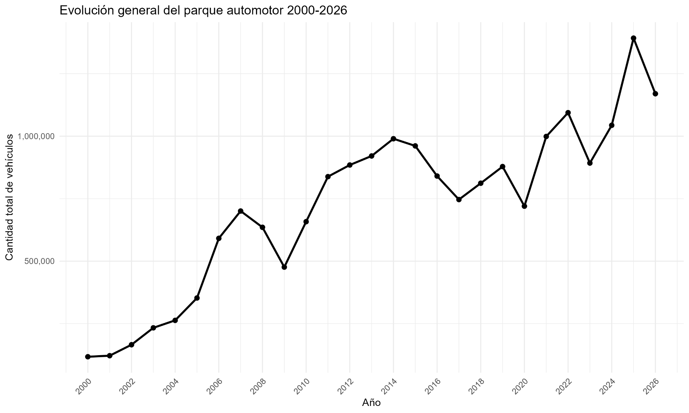
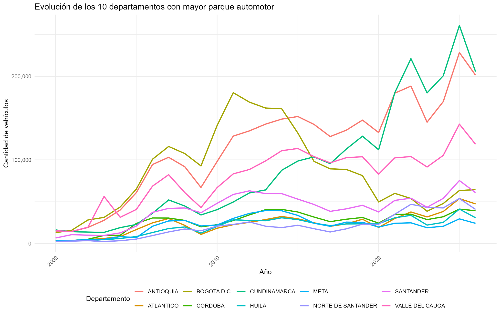
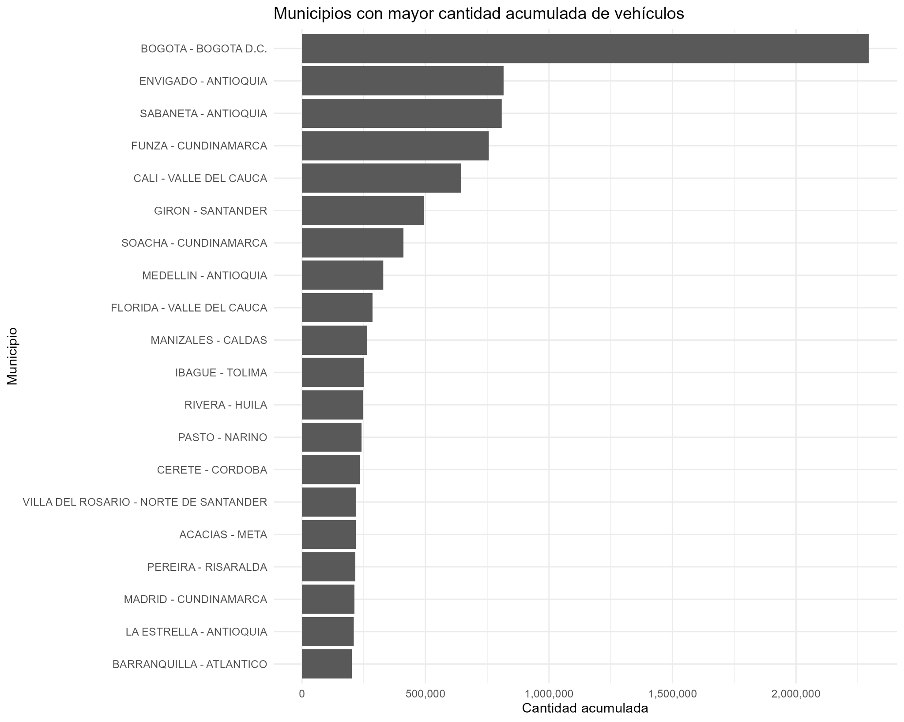
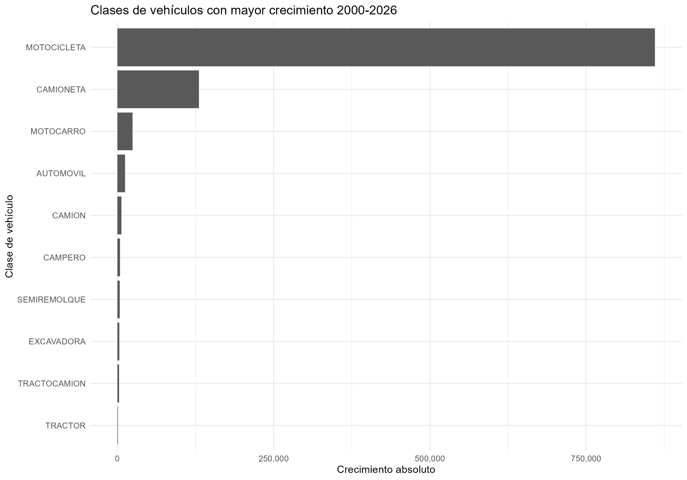
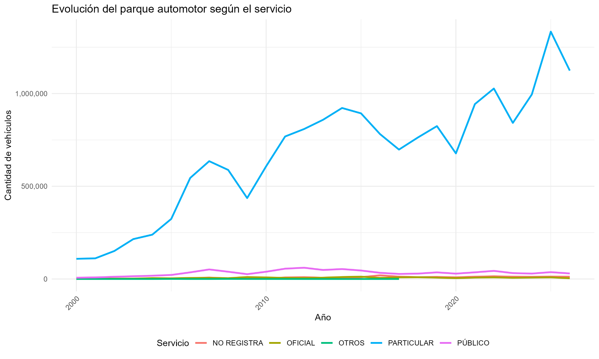
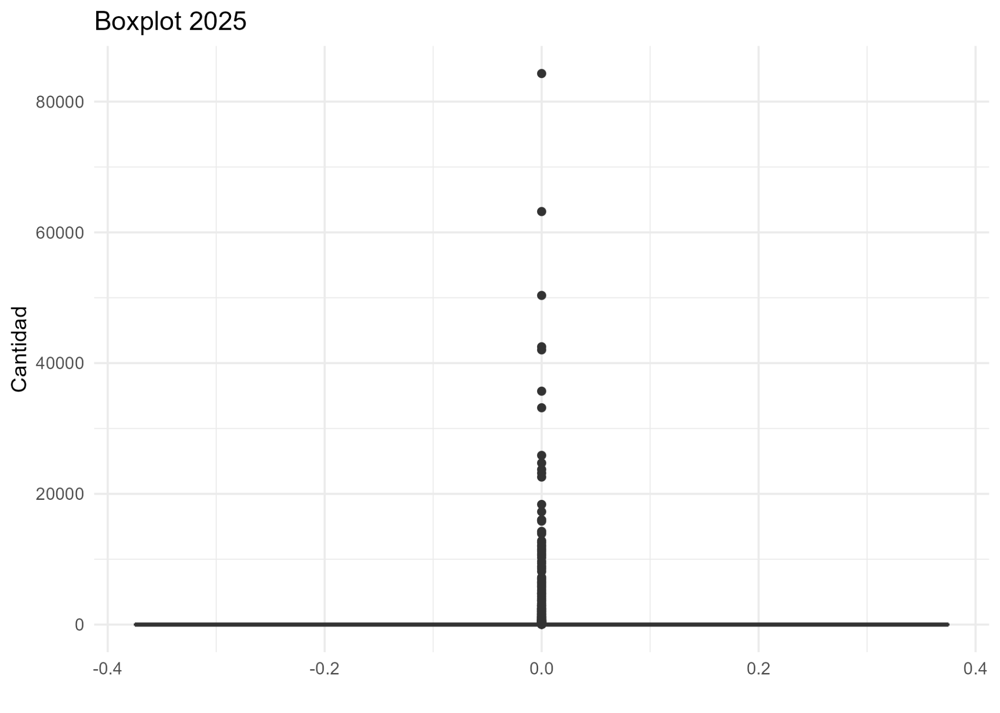
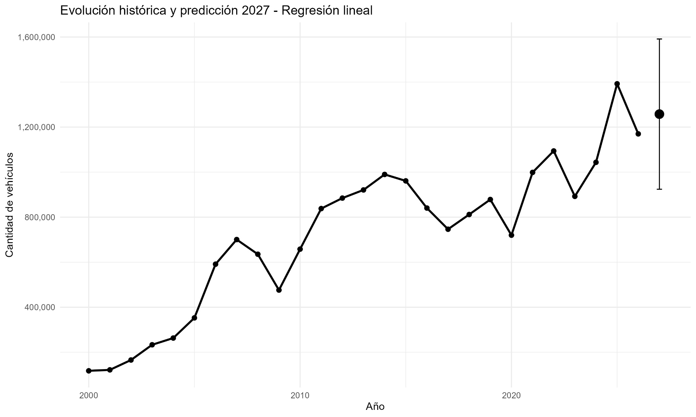
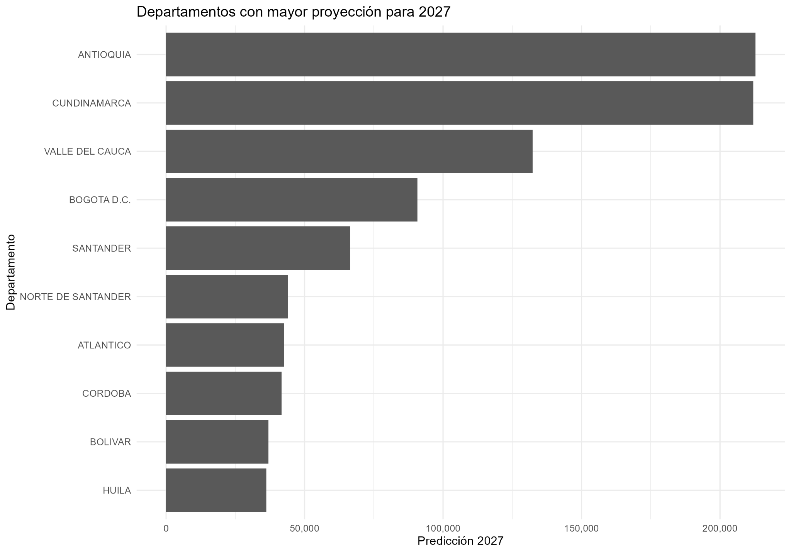

Análisis estadístico en R
Evolución y proyección del parque automotor en Colombia
Contexto histórico 2000–2026 · foco analítico 2020–2026 · proyección 2027
01 · Contextualización
¿Qué contiene la base de datos?
Objeto de estudio
La base consolida información del parque automotor registrado en Colombia y permite observar la cantidad de vehículos según ubicación geográfica, clase, servicio, estado y año de registro.
La variable central fue cantidad, porque representa el número de vehículos asociado a cada combinación de características.
Variables utilizadas
02 · Preparación
Cómo se trabajó la base en R
read_excel()
Importó la hoja Base_limpia desde el archivo Excel.
filter()
Limitó el análisis al periodo definido y permitió crear subconjuntos específicos como 2025–2026.
group_by() + summarise()
Agruparon por año, departamento, municipio, clase y servicio para totalizar cantidad.
mutate() + lag()
Calcularon crecimiento absoluto y porcentaje de variación frente al año anterior.
03 · Foco reciente
2020–2026: años centrales del análisis
04 · Estadística descriptiva
Evolución general del parque automotor

05 · Cómo se calculó
Funciones usadas para medir el crecimiento
crecimiento_anual <- datos_periodo %>%
group_by(fecha_de_registro) %>%
summarise(
total_vehiculos = sum(cantidad),
registros = n(),
.groups = "drop"
) %>%
arrange(fecha_de_registro) %>%
mutate(
crecimiento_absoluto = total_vehiculos - lag(total_vehiculos),
crecimiento_porcentual = (total_vehiculos / lag(total_vehiculos) - 1) * 100
)sum()Totaliza la cantidad de vehículos.n()Cuenta filas, no vehículos.arrange()Ordena cronológicamente.lag()Trae el valor del año anterior.mutate()Crea nuevas variables calculadas.06 · Territorio
Evolución por departamento

07 · Escala municipal
Municipios con mayor cantidad acumulada

08 · Clase de vehículo
¿Qué clases crecieron más?

09 · Uso del vehículo
Evolución según el tipo de servicio

10 · Requisito del profesor
Comparación descriptiva 2025 vs. 2026
| Año | Registros | Media | Mediana | Desv. | Máximo | Total |
|---|---|---|---|---|---|---|
| 2025 | 4.180 | 333,08 | 4 | 2.607,97 | 84.298 | 1.392.265 |
| 2026 | 3.716 | 314,81 | 4 | 2.428,38 | 73.872 | 1.169.846 |
11 · Distribución
Boxplots de 2025 y 2026

12 · Estadística inferencial
Normalidad y selección de la prueba
2026: p < 2,2e−16
No existe evidencia suficiente para afirmar una diferencia significativa entre 2025 y 2026.
13 · Intervalos
Intervalos de confianza del 95%
14 · Estadística predictiva
Objetivo: estimar el comportamiento de 2027
Hipótesis del modelo lineal
H₀: β₁ = 0. El año no presenta relación significativa con la cantidad registrada.
H₁: β₁ ≠ 0. El año sí presenta relación significativa con la cantidad registrada.
Estrategia de validación
Se reservaron los últimos 3 años como conjunto de prueba y se compararon tres modelos mediante RMSE.
El modelo con menor RMSE se seleccionó para proyectar 2027.
15 · Funciones predictivas en R
Qué hizo cada función
lm()Regresión linealModeló la relación entre año y total de vehículos.summary()DiagnósticoMostró coeficientes, R², estadísticos t y p-valores.tidy()Tabla de coeficientesOrganizó los resultados del modelo para interpretación.predict()PredicciónEstimó valores futuros y generó intervalos de predicción.ts()Serie temporalTransformó los datos anuales en una serie ordenada.ets()Suavizamiento exponencialProbó un modelo basado en nivel y tendencia.auto.arima()ARIMA automáticoSeleccionó automáticamente una estructura ARIMA apropiada.forecast()PronósticoGeneró pronósticos para ETS y ARIMA.sqrt(mean((real-pred)^2))RMSEMidió el error de predicción; menor es mejor.16 · Selección del modelo
Comparación por RMSE
Fue el modelo con menor error de predicción en el conjunto de prueba.
17 · Resultado del modelo
La tendencia anual fue estadísticamente significativa
18 · Pronóstico general
Proyección del parque automotor para 2027

19 · Pronóstico territorial
Departamentos con mayor proyección para 2027

20 · Conclusiones
Principales hallazgos
El parque automotor presenta una tendencia general creciente, aunque con variaciones fuertes entre años.
Motocicletas y camionetas lideran el crecimiento absoluto por clase; el servicio particular concentra el mayor volumen.
En la comparación 2025–2026 no se encontró evidencia estadística suficiente de diferencia significativa mediante Wilcoxon.
La regresión lineal superó a ETS y ARIMA en RMSE y proyectó 1.257.605 vehículos para 2027, con un intervalo amplio que refleja incertidumbre.
Proyecto en RStudio
De la descripción histórica a la proyección futura
La base permitió integrar análisis descriptivo, comparación inferencial y modelación predictiva para comprender cómo ha evolucionado el parque automotor y qué comportamiento podría esperarse en el corto plazo.